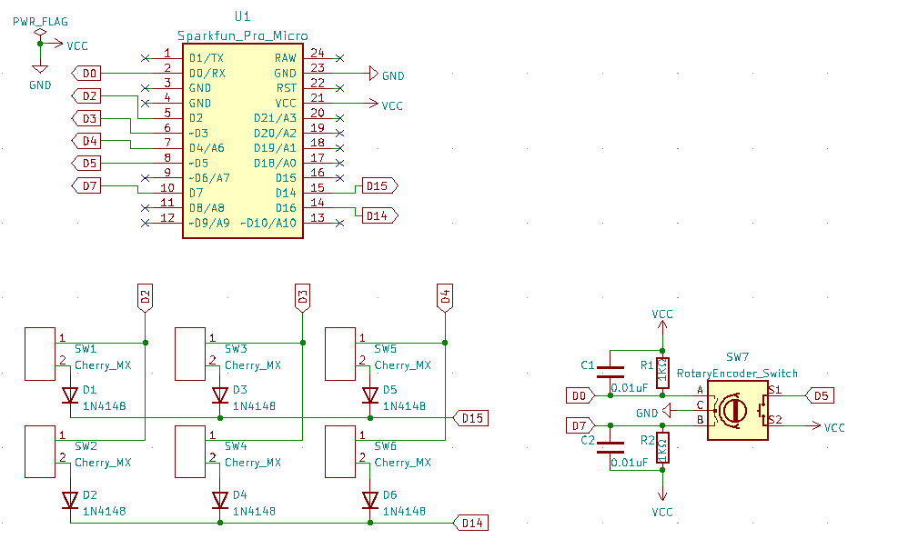
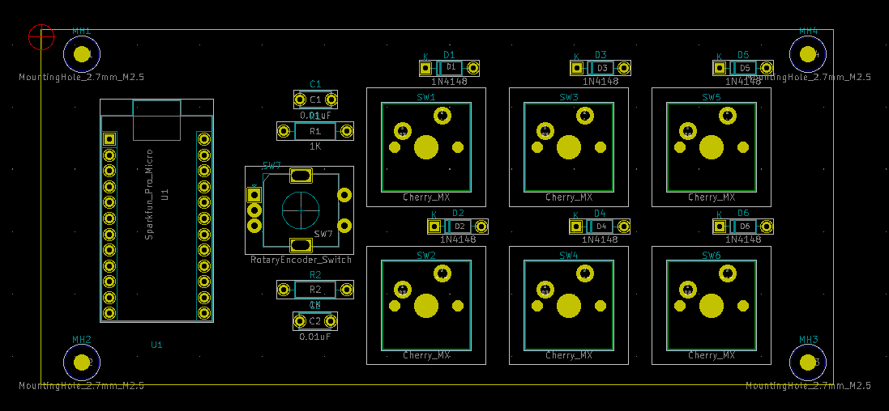
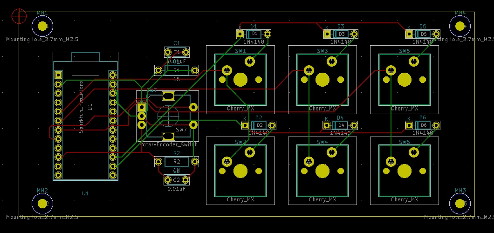
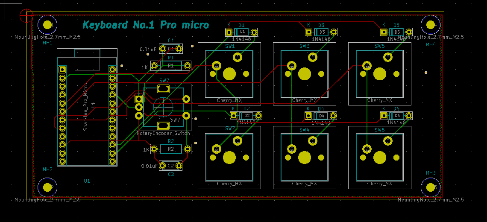

シューです
前回ロータリーエンコーダを使って試作をしましたよね
そちらを前々回のキーボードの回路とくっつけました

今回はこちらをプリント基板にしていきます
機械の中に緑の板が入っいるイメージないですか？
それです（適当）
真面目に説明しますと、そういった板のことをプリント基板だったりPBCなどといいます
最近は緑以外にもいろんな色があります
プリント基板は配線がすでにされていて、部品をハンダするだけの板です
便利なんですが、こちらを作るとなると家だと少し大変でお金もかかってしますんです
なので今回は業者さんに頼んで作ってもらうということをします
実は結構簡単なんですよ
ではこれを設計します。Kicadという私が回路図を描いたものと同じソフトを使って設計していきます
割と大変だった...

とりあえずこんな感じで配置しました
で、次はこちらを配線していくんですが、手で配線するのはちょっとめんどくさいので今回はフリーソフトを使います
freeroute.jarという便利なソフトです
ただ、自動配線なので個人的に直したいところだったり、少し複雑になっているところを手で修正します
こんな感じで配線してみました

初めてなので下手なところもあると思いますが許してほしいです
最後に微調整をしてこんな感じにしました

あとはこれを業者さんに発注してやればいいですね
内容が薄いのは申し訳ないです
基板の発注はまた次回にして、気づいたところを修正しようと思います
多分ガバガバなところが何ヵ所かあるので、基板は二かい発注することになると思います
ひえー
まだまだ続きます。ではまた
ツイートする